User Guide
Apache Roller Weblogger
Version 4.0.1
Table of Contents
Table of Contents
1 Overview 4
1.1 Copyright and trademark information 4
1.2 Feedback 4
1.3 Acknowledgments 4
1.4 Modifications and Updates 4
2 Introduction 5
3 Getting started with Roller 6
3.1 Getting started with a new Roller installation 6
3.2 Creating a new user and weblog 9
3.3 Getting around in Roller 12
4 Creating and editing your weblog 13
4.1 Creating and editing a weblog entries 14
4.1.1 Weblog editor fields 15
4.1.2 Weblog editor buttons 15
4.1.3 Weblog editor plugin settings 16
4.1.4 Weblog editor advanced settings 16
4.2 Finding and editing weblog entries 17
4.3 Managing categories 18
4.4 Managing your weblog's blogroll 19
4.5 Uploading images and other files to your weblog 20
4.6 Podcasting with Roller 21
4.6.1 How to create a podcast feed with Roller 21
4.7 Using a weblog client with Roller 22
5 Working with comments and trackbacks 23
5.1 Comment notification via email 23
5.2 Comment management 23
5.3 Comment moderation 24
5.4 Global comment management 24
5.5 Preventing weblog spam 25
5.6 Sending trackbacks 26
6 Choosing your weblog theme 27
7 Managing your weblog preferences 28
7.1 Weblog settings 28
7.1.1 General settings 28
7.1.2 Internationalization Settings 29
7.1.3 Comments and default comment settings 29
7.1.4 Weblog client API 30
7.1.5 Formatting 30
7.1.6 Spam pevention 31
7.2 Weblog members: managing a group blog 32
8 Using weblog pings 34
8.1 Registering with an Aggregator 34
8.2 Ping Targets, Common and Custom 34
8.3 Setting up Automated Pings 34
8.4 Sending a Manual Ping 36
8.5 Creating and Editing Custom Ping Targets 36
8.6 More on Registering with an Aggregator 38
9 Roller administration 39
9.1 Managing users 39
9.2 Configuring Roller 41
10 Weblog update ping administration 44
10.1 Creating and editing common ping targets 44
10.2 How Roller Processes Weblog Update Pings 44
10.3 Configuration Properties Controlling Ping Processing 45
10.4 Suspending all ping processing 45
10.5 Controlling and disabling ping usage 45
10.6 Initialization of common ping targets 46
11 Planet Roller administration 47
11.1 Configuring Planet Roller 47
11.2 Adding external weblogs to Planet Roller 48
11.3 Adding custom groups to Planet Roller 49
12 Apache Software License, Version 2.0 50
This document is a user guide to the Apache Roller Weblogger, the Java-based and open source weblog server that is produced by the Apache Roller project of the Apache Software Foundation.
There are separate guides available on other topics; an Template Guide for those who wish to customize the layout and design of their weblog pages and an Installation Guide for those installing the Roller software on a web server.
The contents of this document are subject to the terms of the Apache Software License.
All trademarks within this document belong to legitimate owners.
Please direct any comments or suggestions about this document to: dev@roller.apache.org
The general format of this document was based on the documentation template used by OpenOffice.org.
|
Date |
Description of Change |
|---|---|
|
08/11/07 |
Rewrites and updates for Roller 4.0, Dave Johnson |
|
07/05/07 |
New format/layout, Dave Johnson |
|
07/31/07 |
Roller 4.0 updates from Linda Skrocki |
|
12/23/08 |
Notes on how email addresses are used |
This user guide describes how to use the Apache Roller Weblogger or Roller for short, a web application that can support a single user weblog, thousands of weblogs and/or group weblogs.
You'll learn how to register as a new user. You'll learn how to create one or more weblogs for yourself or a group of your friends. You'll learn how to create, edit and post weblog entries. We will also cover more advanced topics such as adjusting your weblog's settings, how to customuize your blogroller, how to manage weblog pings and more.
First, let's get some terminology out of the way because there's a lot of jargon in weblogging. Here's a list of some of the terms we use in this manual without a whole lot of background.
Weblog: A set of web pages and RSS/Atom feeds that display weblog entries written by one or more authors, uploaded images, bookmarks and comments posted by visitors. Weblog entries are displayed on the main page of the weblog and in the weblog's feeds in reverse chronological order.
Weblog entry. A single weblog entry with a title, publication timestamp, summary, content and some settings that indicate if and when comments are allowed.
Comment. A comment posted by a vistor to a weblog and regarding one specific weblog post. A comment has an email address, a publication timestamp and some content.
Trackback. A comment posted by a remote weblog regarding one specific weblog post. Trackbacks are stored as comments by Roller.
Templates. Each Roller weblog is defined by a set of HTML and CSS templates that provide the layout and styles for the weblog. Normally templates are authored using Velocity template language, but other languages are possible via plugins (i.e. Groovy Server Pages, JRuby, etc.)
Feed. A feed is an XML representation of the most recent entries, comments or other data. Folks can subscribe to your feed to be alerted of new weblog entries and comments posted. Roller supports both RSS and Atom formats for feeds.
Feed reader. Software that makes it easy to subscribe to and read feeds, e.g. Google Reader, Net News Wire, Feed Demon, etc.
Blog client. Software that makes it easy to post to your weblog, e.g. Ecto and Mars Edit.
With that out of the way, let's get started blogging with Roller.
Getting started with Roller means different things to differernt people. If you are using an existing Roller server, then getting started means registering a new user and creating or joining a weblog. If that's the case for you, skip ahead to section 3.2. If you just finished setting up your own Roller installation on your own web server, then getting started means a little bit more. You've got a little post installation work to do.
Once you've got Roller up and running you will see a screen like the one below, which explains exactly what you've got to do to get started with Roller. First, create a new user so you can login. Second, login and create a weblog for yourself or one to server as the front page of the site or both. Third, designate which weblog is the front page weblog.
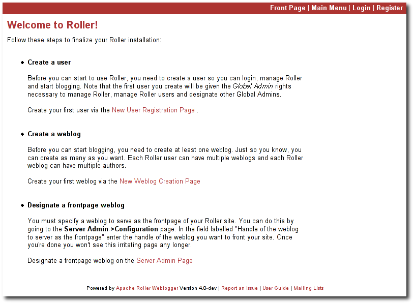
Illustration
1: Welcome to Roller
Creating the first user. Your first step is to create a new user. Remember, the first user you create will be given administrative privileges. You might want to use the username "admin" or something similar. Later, you can login as the admin user when you need to change site-wide settings. If you wish, you can grant other users admin privileges so they can help out with admin duties. Let's take a look at the user registration page. You can see the new user registration form in the next section.
Create the first weblog(s). Next you should create at least one weblog. See section 3.2 below for some more information the create weblog page. If you are running a personal blog site, then you might want your weblog to serve as the front page of your site. In that case, create a weblog, use a normal weblog theme (i.e. not the Roller Homepage theme) and assign your weblog as the front page weblog of the site.
If you are running a communty weblog site with multiple weblogs, then you will probably want to create a weblog to serve as the front page of the site. Create a new weblog, name it "main" or "community" or something suitable because it's name will appear in URLs. And we recommend that you use the Roller Homepage theme because it is specially designed to serve as a weblog comminity front page, aggregating all of the site's weblogs together but having no content of its own.
Designate a front page weblog. Once you've created a front page weblog, whether it be a personal weblog or a community aggregator, you need to tell Roller. So, follow the link to the Server Admin page and look for the Site Setting section. Enter the handle of your front page weblog and, if you are running a community site then set the Enable aggregaed site-wide frontpage checkbox before you click Save.
If you've read this far, you've probably created your own user and weblog and if so you can skip the next section.
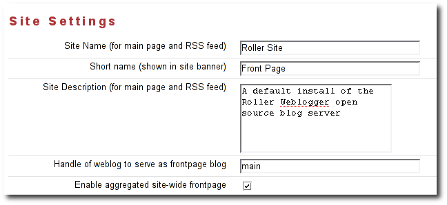
Illustration
2: Weblog Settings page: Site Settings
To create a new user use the Register link, which can be found in the top right of the Roller login page. That link will take you to the New User Registration page shown below.
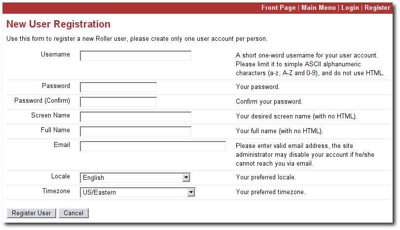
Illustration
3: New User Registration page
The New User Registration form is pretty self-explanatory, but keep in mind that your username cannot be changed; it is your unique identifier in the system. But that's OK because your screenname is the name that will be displayed on your weblog and in your feeds and you can change it later if you wish.
Email. Note that if you have enabled email notificaition of new comments, Roller will use this email address to send you notifications about comments on weblog entries that were written by you.
Picking your language and timezone. You can set your language of choice and timezone too, but these values don't do much in Roller. The locale and timezone of your weblog are really what matter. The values you set here will be used as your defaults when you create your weblog.
Creating a weblog . Once you've created a user, then login and you'll see the Roller Main Menu page and a greeting that reads:
You've got a user account, but no weblog. Would you like to create one?
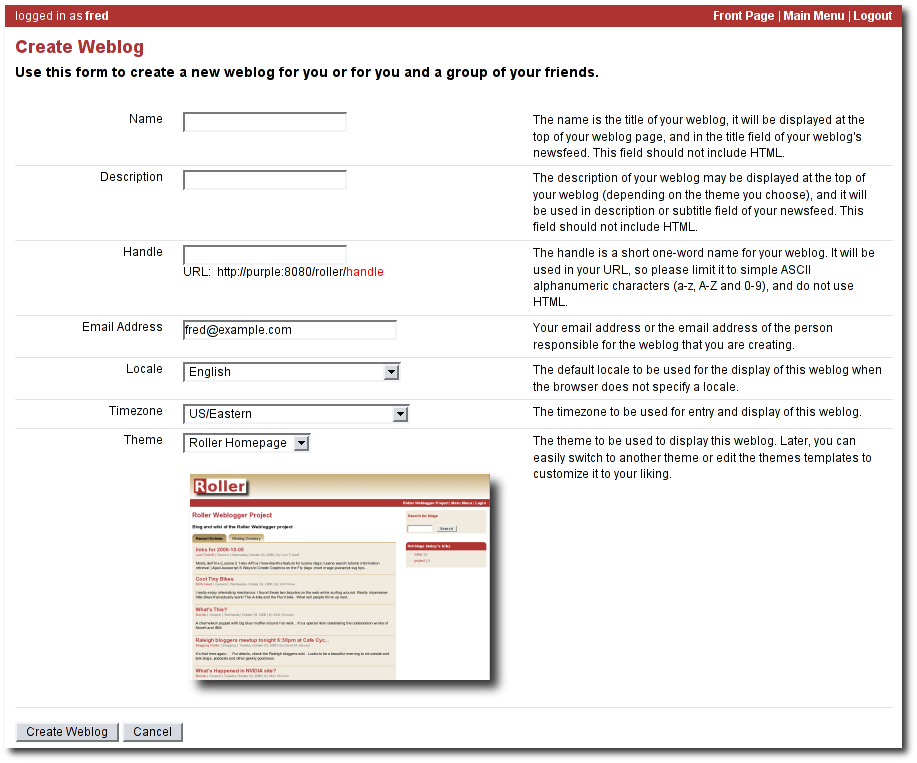
Illustration
4: Create Weblog page
Follow that link to create your first weblog.
You'll see the form below.
The form is designed to be self-explanatory. Note that you can change everything later, except for the weblog handle, which is the unique indentifier for your weblog.
Now that you've got a user and a weblog, let's discuss how to get around in the Roller interface.
Once you've logged into Roller's editor pages you should be able to find your way around using Roller's tabbed menu. To provide a little extra assistance, Roller displays a status bar at the top of each editor page.
For example, the status bar below indicates that you are logged in as user 'admin' and you are not editing a weblog. You can go directly to the front page of the site by clicking the first link on the right (it might not be labelled Front Page on your site), to the main menu with the second link and you can log out entirely by using the Logout.
Illustration
5: Status bar, no weblog
For example, the status bar below indicates that you are logged in as user 'admin' and you are editing a weblog with the handle 'adminblog'.
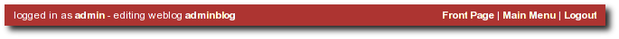
Illustration
6: Status bar within weblog
If you are not logged into Roller then you can either access the login link directly or use a Login link from one of the weblogs on the site. The login link is of this form:
http://hostname/roller-ui/login-redirect.rol
Or this form is Roller is installed under it's own context:
http://hostname/roller/roller-ui/login-redirect.rol
You probably won't need to cut-and-paste that link because most weblogs display an author menu like so:
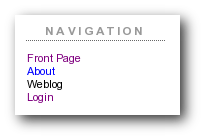
Illustration
7: Weblog navigation bar
Now that we've covered the basics of registering a new user, creating a new weblog and finding your way around let's start blogging.
First, you login to Roller. What happens next depends on the number of weblogs that you have. If you have one weblog, you'll be taken directly to the New Entry page for that weblog.
If you have more than one weblog or none at all, then you'll be taken to the Main Menu page, shown below, so you can pick which weblog to edit and/or create new weblogs.
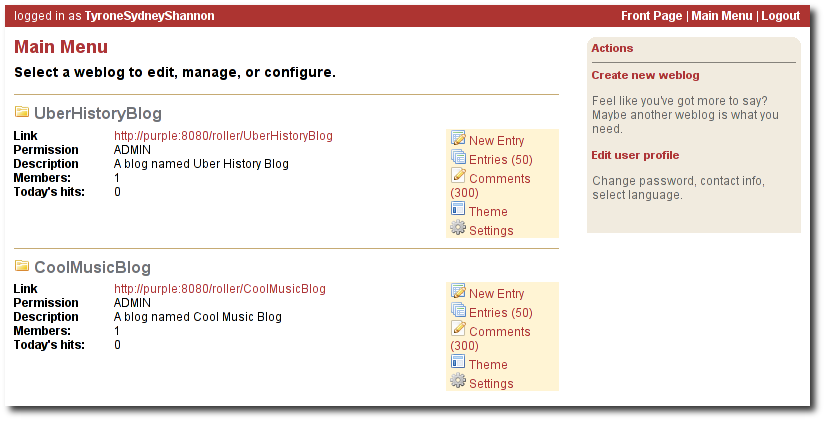
Illustration
8: Main menu
The main menu page lists all of your weblogs
and for each, shows you links to its New Entry, Entries, Comments,
Theme and Settings pages. You can also create a new weblog, edit your
user profile.
If you are logged in as a Global Administrator, you will also see a Server Admin link in the actions side-bar. And if you have Roller's Planet aggregator enabled, then you will also see a Planet Admin link there as well.
Use the Create & Edit -> New Entry page (also known as the Weblog editor page) to create, edit and publish weblog entries. Using the page, shown below in illustration 7, you can set entry title, category, content and summary. You can also set some advanced settings by expanding the Plugins To Apply and Advanced Settings controls at the bottom of the page. Let's review those fields, buttons and settings.
Illustration
9: Weblog editor 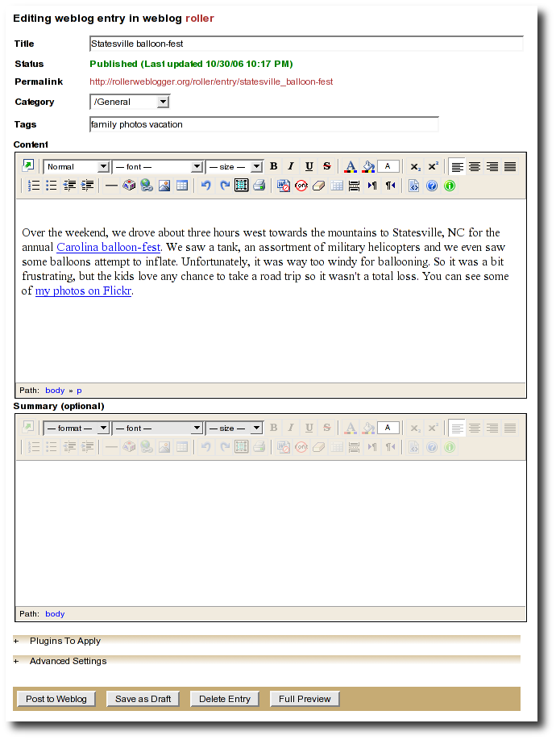
Let's discuss each of the fields on the New Entry page, so you know how to use them.
Title – Each weblog entry must have a title. Be careful when you pick your title, it will be used in the link to your weblog entry. For best results, do use titles that are short and to-the-point. Don't include any HTML in your titles, just plain text – if you want your titles to be bold, then customize your templates instead of embedding HTML in your titles.
Status – This read-only field tells you about the current state of the weblog entry that you are editing. There are three possible status settings:
Not Saved – the entry has never neen saved
Draft – the entry is saved as a draft and is not yet visible to your weblog's readers
Published – the entry has been published and is visible to your weblog's readers
Permalink – this read-only field is the permalink link to your weblog entry. It is set the first time that you save an entry, based on the title at the time you save – and it cannot be changed later.
Category – You can pick one category for your weblog entry. Categories are for folks who want to organized the entries in their weblog into a small-set of fixed and possible hierarchical categories, defined by the weblog admin (that's probably you). You can add and remove categories via the Categories page.
Tags – (optional) In addition to assigning each of your weblog entries to a category you can also tag them. You can assign a list of tags to each entry. You can use any tag name you want. Separate your tags with spaces. Currently, the only way to do multi-word tags is to use an underbar, for example to tag something with "apache roller" you would use the tag apache_roller. As you type, Roller may suggest tags that you've used before.
Content – This is the main body of your weblog entry, in HTML format. We try to make that easy by providing two ways to edit the content. Via the Setttings page, you can pick either of these:
Rich Text Editor (Xinha) – a rich-text editor that's designed to make editing HTML as easy as using MS Word or Open Office.
Text Editor – a plain-text editor that you can use to edit the raw HTML markup of your weblog entries. Don't use this unless you know HTML.
Summary – (optional) If you wish, you can enter a short summary of your weblog post. If you do so, then the short summary will be displayed on the main page of your weblog and your readers will have to click a Read More link to get to the full-content. Some bloggers like to do this when they have very long post and they don't want that long post to dominate the main page of their weblog.
Here's a guide to the buttons that appear on the Weblog editor page.
Post to weblog – Using this button will publish your weblog entry and make it visible to the world. Make sure you're happy with your post before you publish because once something is published on the web, and grabbed by the blog aggregators and search engines, there's really no way to un-publish it.
Submit for review – if you're just a limited blogger, you won't see the Post to weblog button because you cannot post to the web. Instead, you'll see a Submit for review button which you can use to send your entry to the author/admin of the blog that you are working in. If they like the post, they can publish it – or they can return it to you for further edits.
Save as draft – this will save your weblog post for later editing, but will not publish it to the web. When you're working on a new weblog entry, use Save as draft often so you won't lose your post in the event of internet connection loss or session time-out.
Delete entry – use this to delete the current weblog entry, you'll be asked to confirm.
Full preview – You won't see this button until you've saved your entry as a draft. It allows you to view, in a separate window, a preview of your entry, displayed using the layout and style of your blog.
If you expand the Plugins to Apply control, you'll see a set of check-boxes, one for each Weblog Entry Plugin that is available. Check the ones that you'd like to apply to your current weblog entry. If you have a favorite plugin, one that you want to use on every entry, then you can set it as a default on your weblog's Settings page.
If you expand the Advanced Settings control, you'll see what's below.
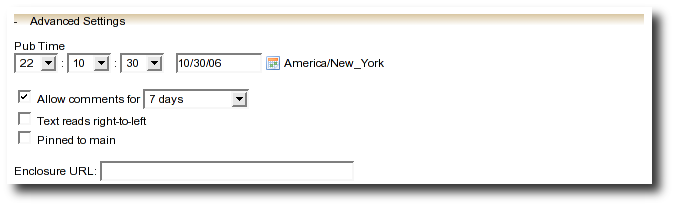
All
of these are optional settings.
Pub Time – if you'd like to set the publication time of your weblog entry to a specific time, possibly one in the future, you can do so here.
Allow comments for – this setting allows you to turn comments on/off for your weblog entry and to limit the number of days that comments are allowed.
Text reads left-to-right – this settings allows you to set the reads left-to-right flag for a weblog entry. Currently, none of the stock Roller templates respect this setting.
Pinned to main – only Global Administrators will see this setting. It's a way to indicate that a post is a special announcement that should be pinned to the top of the front-page of a weblog site. The front-page theme respects this setting).
Enclosure URL: if you'd like to include a audio, video or image file as a podcast in your weblog's RSS feed, then enter the URL of that file here.
All of your weblog entries are saved in a database. Once your entries scroll off the front page or off the recent entries list of the weblog editor page, they are still available via next and previous links displayed on your weblog and via the weblog calendar that is included in most weblog themes.
You can also access your entries via the Edit Entries page, which allows you to search entries via keyword, category, tags, date and status.
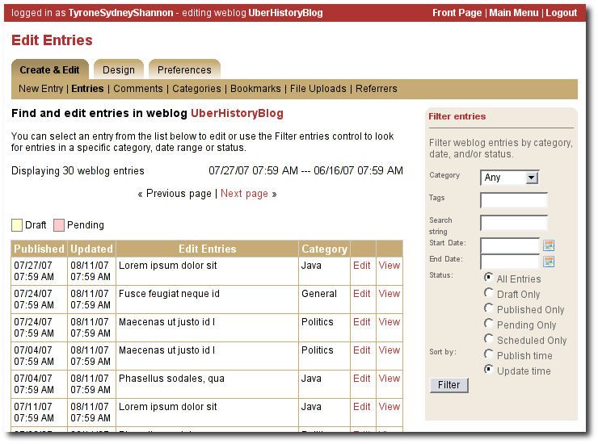
Illustration
10: Edit entries page
Each weblog can define its own unique list of categories to be used for categorizing weblog entries, using the Categories page shown below. When you or another author of your weblog creates a new entry you must choose one of the categories you have defined.
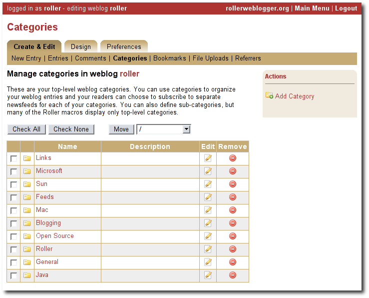
Illustration
11: Categories page
You can use the Categories page to add new categories and to edit your existing ones. You can change category names if you wish. And you can also delete categories and if a category is in use you will be asked to re-categorize the entries in that category.
You can also define a hierarchy of categories and move categories around in that hierarchy, but support for hierarchical categories is somewhat limited in most Roller themes. Unless you are prepared to do some customization via template editing, you probably don't want to use hierarchical categories.
Roller makes it easy to maintain a blogroll, that is, a list of your favorite weblogs and web sites that is displayed in the sidebar of your weblog. Individual blogroll items are known as bookmarks. Use the Create & Edit:Bookmarks page to add, edit and delete bookmarks and bookmark folders in your blogroll.
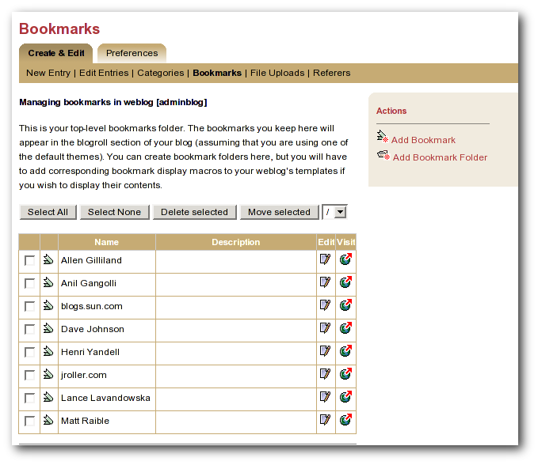
Illustration
12: Bookmarks management page
If you'd like to upload images or other files for use in your weblog, go to your weblog's Create & Edit -> File Uploads page. From there you can upload files and manage the files that you have already uploaded.
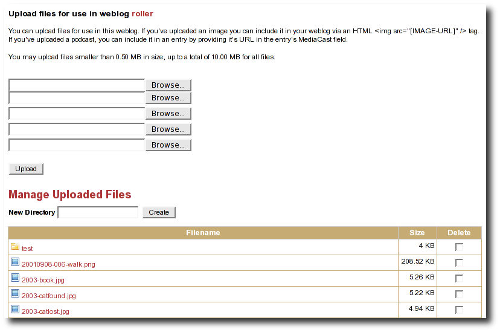
Illustration
13: File-Upload page
Using this interface you can:
Upload up to five files at a time. To upload a file click a Browse button, select the file you wish to upload on the file-system and click the Upload button to upload it to Roller.
Create sub-directories (one level deep) to organize your uploaded files. Just enter the desired name of the new directory in the New Directory field and click the Create button.
Delete uploaded files and directories. To delete a file or directory, just check the Delete check-box them click the Delete Selected button at the bottom of the page.
How to blog an image
If you want to upload an image to Roller and then include that image in a blog post, here's what you do.
Upload the image you wish to use in a weblog entry. Once the upload is complete, you'll see a success message like this with the URL that can be used to view that image.
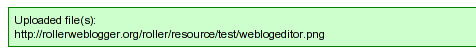
Select
that URL text and copy it (using right-click copy or ALT-C).
Create a new weblog entry or open an existing weblog entry in which you'd like to include the image.
If you are using the Rich Text Editor, choose the insert image button and enter the URL of the image.
If you are using the plain text editor, use an <img> element to display the image like so:
<img src="http://rollerweblogger.org/roller/resource/weblogeditor.png"
alt="Image of the weblog editor" />
Roller now includes support for podcasting, a way to distribute files through your weblog's newsfeed. Typically, folks use podcasting to distribute audio files, but the technique can be used to distribute any type of file. Specialized podcast client software downloads the audio files that are referenced in your newsfeed and copies them to an music player, such as an MP3 player.
In Roller a Podcast is like an attachment to a weblog entry. We call it mediacasting in the Roller UI because it can be any type of file and is not necessarily destined for play on an Apple iPod. Here are the steps involved in Podcasting with Roller:
Record an interesting Podcast (that's the hard part, by the way) and save your Podcast in MP3 format or whatever format you prefer.
Upload your Podcast to a web server somewhere and take note of your Podcast's URL. For example, if you were to upload a file to Roller, then the URL might look something like this:
http://hostname/roller/yourname/resource/mycast.mp3
Create a new Roller weblog entry announcing your new Podcast. You might want to provide a link to it so that those without a Podcast client can click to download it directly. For example:
Hey now!
I just created my first Podcast you can download it here:
<a
href="http://hostname/roller/yourname/resource/mycast.mp3">mycast.mp3</a>
And the most important step: in the lower-half of the weblog editor page, you'll see an expandable control labelled Advanced Settings. Click on that to expand the control and paste in the URL of your podcast.
Once your blog post is ready, save it as a draft or publish it. Once you've done that you'll see that the Advanced Settings control has picked up the content-type and file-size of your podcast. If not, then Roller could not access your podcast due to network problems or perhaps a bad URL. Make sure the URL is correct and save again. If your podcast is OK, you'll see something like this:
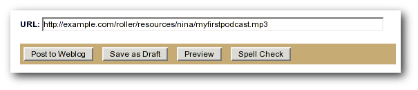
Illustration
14: Podcast URL field
Roller will add the podcast to your RSS newsfeed as an <enclosure>. You can check this by looking at your RSS newsfeed and any podcast software that is subscribed to your feed will pick it up automatically.
<enclosure url="http://example.com/roller/nina/resource/mycast.mp3" type="audio/x-mpeg" length="3409127" />
Using a nice weblog client like Ecto or MarsEdit can make it easier for you to post to you Roller weblog. You can also post to your weblog remotely from services like Flickr.com and del.icio.us. This is possible because Roller supports a standard publishing protocols such as the MetaWeblog API and the Atom Publishing Protocol. Here's how to setup a weblog client to post to Roller.
Configuring a weblog client for use with Roller
First, make sure to enable weblog client API support in your weblog via your weblog's Weblog Settings page.
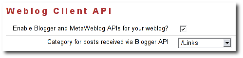
Illustration
15: Weblog Settings page: Weblog Client API
Next, start your blogging client, find the preferences or account setup dialog. You'll need to set the following parameters:
Username: your Roller username
Password: your Roller password
BlogID: the handle of your Roller weblog
URL: the URL of Roller's web services end-point
Note that you may not need to enter your BlogID because some blog clients will login to Roller and then present you with a list of the weblogs that are available to your user.
A blogs.sun.com example. For example, if you have an account on blogs.sun.com, your username is fred and your blog's handle is fredsblog (i.e. your weblog's URL is http://blogs.sun.com/fredsblog), then your paramrters would be:
Username: fred
Password: (your password)
BlogID: fredsblog
You may not need to enter your BlogID because some blog clients will login to Roller and then present you with a list of the weblogs that are available to your user.
A jroller.com example. If you have an account on jroller.com, your username is fred and your blog's handle is fredsblog (i.e. your weblog's URL is http://jroller.com/fredsblog), then your paramters would be:
Username: fred
Password: (your password)
BlogID: fredsblog
URL: http://jroller.com/roller-services/xmlrpc
Roller supports weblog comments and trackbacks, which provide a way for other bloggers to add comments to your blog remotely. By default comments and trackbacks are enabled, but you can turn them off on your weblog's Weblog Settnigs page of your weblog. Note that turning off comments, disables both comments and trackbacks.
If you're going to leave comments turn on then take the time to read them, to respond where appropriate and, when you receive spam or other forms of offensive comments, delete them from your weblog. You can't respond to comments if you don't know when you get one, so make sure you enable email notification of comments. You can do that on the Weblog Settings page.
If you've got email turned on then you'll receive an email every time you get a new comment and the email will include the text of the comment, a link to the entry that was commented upon and a link to the comment management page, shown below, where you may choose to approve, mark as spam or even delete the new comment.
Make sure you have set your correct email in your user profile. The email address set in your profile will be the one used to notify you of comments on weblog posts that you authored.
You can use the Comments page to manage your weblog comments. You can mark comments as spam or delete them entirely. You can search comments by keyword, date and status. If you've got comment moderation turned on, you will use the Comments page to approve new comments.
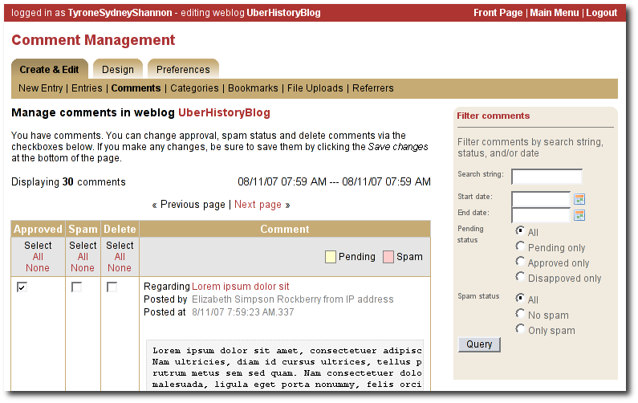
Illustration
16: Comments page
A word about status
You can't edit comments, but you can mark them as spam or dis-approve them. Currently, Someday, Roller may provide some spam filtering based on data collected from comments marked as spam but currently, marking as spam and dis-approving of a comment do the same thing -- they prevent the comment from being displayed on your weblog.
How to get to the Comments page
There are a couple of ways to get to the Comments page. You can use Roller's tabbed menu to go there and manage comment across your entire weblog. If you've got email notification of new comments turned on, the you might arrive at the Comments page via a link sent to you in your email.
You can also manage comments for just one weblog. When you are editing a weblog entry with comments you'll see a link in the top-right corner of the weblog editor page like the one below, which you can use to access the entry's comments.
If you'd like to preview and approve comments before they are displayed on your weblog, then you'll want to turn on comment moderation via Weblog Settings page. When comment moderation is enabled, then each new comment will be marked as pending and unapproved and will not appear on your weblog. To check for new comments, go to the Comments page to check for and either approve or delete new comments. If you've got comment notification enabled, make sure you also enable comment notification so you'll know when new comments arrive. To moderate comments, use the comment management page, described below.
How to moderate comments
Review each new comment and decide if it is to be approved for display, marked as spam and hidden or deleted entirely.
Only comments that are marked as approved and are not spam will be displayed on your weblog. So set (or unset) the corresponding checkboxes for each comment, or leave them the way they are.
When you are done. Click the save changes button at the bottom of the page. You'll see that comments that were pending are no longer pending and those that you marked for delete will be gone.
If your user has global adminstration privileges, then you can manage comments across the entire Roller site, including every weblog. To do this, go to the Server Adminstation:Comments page and you'll see a page that is almost identical to the weblog-specific comment management page.
Limitations of global comment management
You can use this page to mark as spam or delete any comment in the system, however you cannot change the approval status of comments through this interface. Approving comments for display is the duty and responsibility of the individual webloggers, so comment approval is only available in the context of a weblog.
There are three forms of comment spam that can affect your weblog:
Comment spam: spam that arrives via the comment form on your weblog. Sometimes spam comments are added by a human and sometimes by a computer program known as a spambot.
Trackback spam: spam that arrives via trackbacks sent by a spambot.
Referrer spam: spam that arrives in web requests and appears on the Referrers page of your Roller blog or on your blog (but only if your blog theme uses the #showReferrers() macro).
Fortunately, there are counter-measures for each type of spam. Here are Roller's built in spam prevention measures:
Pluggable comment authentication. By default, Roller asks each commenter a simple math question to ensure that they are a person and not a spam robot. Your site administrator can turn this off or replace it with another form of authentication.
Pluggable comment validation. Roller includes five commet validators below. Your site administrator can adjust the settings for these validators and can enable/disable them as needed by overriding Roller's configuration properties (see the Installation Guide for more information).
Excess links validator will mark comments with more than three links as spam (default: on)
Excess size validator marks any comment with more than 1000 characters as spam (default: on)
Blacklist validator will mark comments that any of your site's designated bad words (default: on)
Trackback verification validator will check incoming trackbacks to ensure that they link to you.
Akismet validator allows you to use the Akismet.com spam prevention service.
Comment throttling. If you're site is being abused by a spam robot your site adminstrator can setup throttling, which will watch for abusers and ban IP addresses that are posting too many comments too quickly.
But nothing beats comment moderation
Even if you've got all of those measures enabled you should still enable email notification of comments so that you are constantly aware of new comments on your weblog. None of the measures are 100% effective. If you are really concerned about displaying offensive content on your weblog even for a short time, then enable comment moderation on your weblog.
Three levels of blacklisting
Roller uses a blacklist, a lists of words which are used to check incoming comments, trackbacks and referrers for spam. The blacklist includes several thousand words and regular expressions which which are used to check incoming comments and trackbacks. If the name, URL or content of a comment or trackback includes one of the blacklist words or matches one of the expressons then that comment or trackback is marked as spam and is not displayed on your weblog, unless you use the comment management page to unmark it.
Actually, there are three levels of blacklist:
Level 1 blacklist: This is the built-in blacklist, the one that comes with Roller. This can only be changed by somebody with root access to the Roller server itself.
Level 2 blacklist: This is the site wide blacklist, which can only be edited by a global administrator via the Server Admin page.
Level 3 blacklist: Weblog specific blacklist, which you control in the Weblog Settings page of your weblog.
Incoming comments and trackbacks are checked against all three levels of blacklist. Incoming referrers, however, are only checked against the levels 2 and 3 blacklist.
How to add words and expressions to the blacklist
If you have a spam problem on your weblog and you'd like to add words to the blacklist, it's probably better for you to ask your administrator to add the words to the level 2 blacklist for you. That way, every blogger on the site will benefit from the addition. If you must do it yourself, here's how you do it:
Go to the Weblog Settings page and scroll down to the blacklist fields
Enter your spam words, one per line
Lines that begin with a left parenthesis will be treated as regular expressions (see the Java API documentation for javax.util.regex.Pattern for a guide to regular expressions). Don't try to use a regular expression unless you really know what you're doing.
If you are writing about something you read on another weblog, you want to let the author and readers of that weblog know that you are doing so, and that other weblog is trackback enabled, then you should send that weblog a trackback ping. Here's a story that illustrates how trackback works:
You read an interesting blog entry on Otto's blog. You notice that Otto's blog entry has a trackback URL, so instead of leaving a comment on Otto's blog you decide to comment by writing a blog entry in your own blog. You copy that trackback URL (using ALT-C, or right-click-copy, or whatever) cause you'll need it later.
You go to your blog and write a new blog
entry in response to Otto's entry. Click the Post to Weblog button
to publish your new entry. After you publish, scroll down on the New
Entry page until you see the following text field and button:
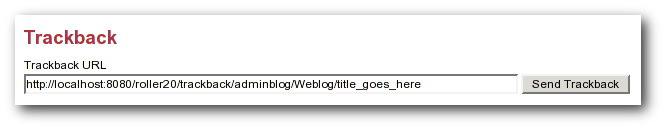
Illustration
17: Send trackback control
Enter the trackback URL from Otto's blog entry into the text field and click the Send Trackback button. Roller will respond by printing the response received from Otto's blog server. If the trackback was successful, you should see something like this:
You should now see your trackback listed among the comments on Otto's blog entry.
A weblog theme is a set of templates, style-sheets and image that determine how your weblog will be displayed. A theme can define both the layout and color-scheme of your weblog. You can pick from one of a number of predefined themes. Some themes will allow you to control design by using a stylesheet. Other themes require you to edit the templates that define the theme if you want to customize them.
Illustration
18: Design menu
You can access Roller's theme and template
features for your weblog via the Design menu, shown below:
The Theme menu leads you to the theme chooser page, shown below. Using this page you can pick from one or more different themes for your weblog. If none of the themes are appealing to you, then speak to your site adminstrator about obtaining or developing some additional themes. The Roller Support project is one place where you can obtain additional themes (http://roller.dev.java.net, not an Apache site).
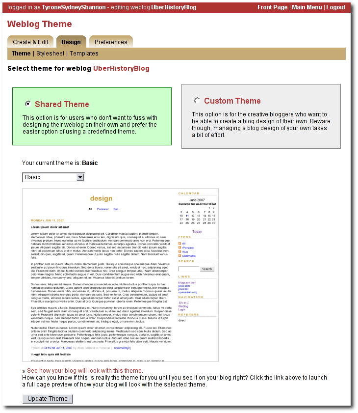
For more information on customizing Roller themes refer to the Template Guide.
As a Roller user, you are free to customize the settings of your weblog as you wish. When you establish your Roller user account, you can choose one of the dozen or so stock themes for your website. Later, you can use the theme switcher to switch to a different theme. Or, if you know something about HTML and CSS you can customize the look-and-feel and layout of your weblog yourself by modifying the page templates that make up your site and by adding new pages. Best of all, you can do all of this through the web-based Roller Editor UI.
The Preferences:Settings page allows you to set the configuration parameters for your weblog.
Here is an explanation of each of the settings on the weblog Preferences:Settings page:
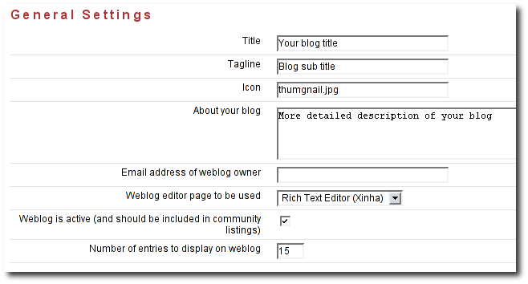
Title - The title of your weblog may include HTML, but the HTML will be stripped out in your RSS feed. You can access your title in a page template with the expression #showWebsiteTitle()
Tagline – Short description or sub title of your weblog. May include HTML, but the HTML will be stripped out in your RSS feed. You can access your tagline in a page template with the expression #showWebsiteDescription().
Icon - The image file name (ex: thumbnail.jpg) or image url (ex: http://yoursite/thumbnail.com) that shows on some of the default themes. You'll need to upload the image via the Create & Edit:File Uploads tab first.
About your blog – A more detailed description of the blog or blog author(s) that shows on some of the default themes.
Email address of weblog owner: Used by site admins to contact the weblog owner. Enter the email address that you would like people to use to contact the person in charge of your blog; usually that's you. To thwart spammers, your email address will be obfuscated when displayed on your blog. Please enter a valid address, otherwise Roller's email features will not work.
Weblog editor page to be used - Choose a weblog editor page, some are rich-text editors:
editor-text.jsp: Simple text editor, you must enter HTML
editor-rte.jsp: Rich text editor (works in Firefox and IE but not Safari)
Weblog is active: un-check this box to indicate that your weblog is no longer active and should not appear in hot-blog and other weblog listing on the site. You might want to do this if you take a very long vacation or if you have decided to stop updating your weblog for some other reason.
Number of entries to display on weblog: Enter the maximum number of entries to be displayed on your weblog.
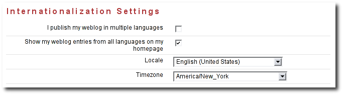
I publish my weblog in multiple languages: check this box if you blog in multiple languages and would like to specify a language locale for each of your weblog entries.
Show my weblog entries from all languages on my home page: check this box if you'd like your weblog's main page to show your posts in all languages. If you don't check it, then readers will only see weblog entries from your default locale.
Locale set the default locale for your weblog.
Timezone: the timezone to be used in your weblog.
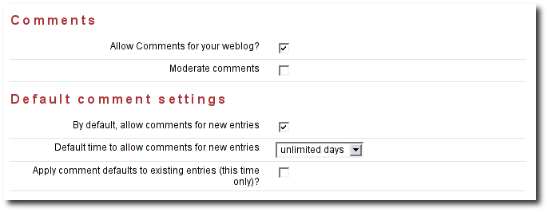
Allow comments for your weblog? – Check this box to allow visitors to leave comments on your weblog.
Moderate comments – Check this box to enable comment moderation (i.e. you must approve each comment before it is displayed).
Email comments – Check this box to receive an email notification of each new comments.
Default from e-mail address for comments – Used as the from address for messages sent by the comments feature. For example, if a user posts a comment on a blog and checks "Notify me by email of new comments", the from address in those emails will show the email address specified in this field.
By default, allow comments for new entries – Check this box to enable comments on your weblog. You can also control comments on each individual weblog entry.
Default time to allow comments for new entries – Choose the default amount of time to allow comments for new blog entries. This setting may also be overridden using the Comment Settings section of the New Entry page.
Apply comment defaults to all existing entries? - If you check this box, when you click the Save button the comment defaults you have set will be applied to all existing comments.
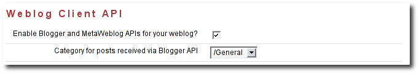
Enable Blogger API for your weblog - Set to true to enable weblogging via the MetaWeblog API. This will allow you to use handy blogging clients like Ecto to post to your weblog.
Category for posts received via Blogger API - Choose the category for incoming posts made via the Blogger API. This only applies if you blogging client does not support categories.
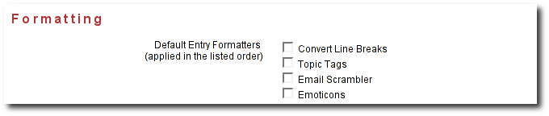
Default entry formatters: this is the list of plug-ins to be enabled by default on a new weblog entry.
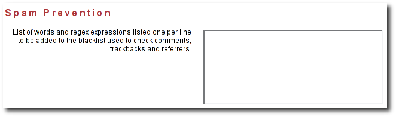
Ignore incoming referrer URLs that contain any of these (comma-separated) words - you can use this to filter out what referrers are accepted. Somewhat useful if you start getting hit by referrer spam, but not a complete solution to the referrer spam problem. See section for more information on spam prevention.
To create a group blog, create a new weblog or log into an existing weblog that you'd like members to contribute to. Creating a weblog for group blogging is the same a creating a personal weblog (see section [3] for instructions). Navigate to the Members menu item in the Preferences tab. The Preferences:Members page enables weblog admins to invite members to a group blog and manage the group blog user access.
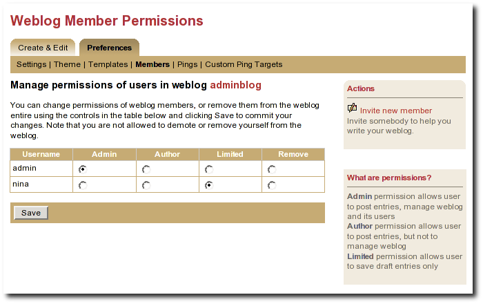
Illustration
19: Weblog permissions page
You can use the Invite new member link to invite any Roller user to join you weblog, but before you do you should understand the three different permission levels allowed for members of a weblog. They are:
Admin: an admin can create/edit weblog entries and publish them to the web. They can also manage the weblog by changing the theme, editing the page templates that define the look of the blog, and managing the users of the blog. Roller will grant you admin rights in any weblog you create. Admin users can see both the Create & Edit tab and the Preferences tab of Roller.
Author: author permission allows users to create entries, edit entries and upload files. But authors cannot change weblog settings, modify the theme or manage users. Authors can see the weblog Create & Edit tab, but not the weblog Preferences tab.
Limited: limited bloggers can create and edit blog entries and save them as drafts, but cannot publish them to the web.
Select Invite new member from the right navigation to invite Admins, Authors, and Limited authors to join the group blog. You'll need to know the users individual blog username to find them in the list of users. You may scroll through the list, but it's best to begin typing their username to locate them. Set the users Permissions by selecting Admin, Author, or Limited. Click on Send Invitation. If roller is not configured to talk to the mail server, you may get the following messages:
User successfully invited. ERROR: Notification email(s) not sent, due to Roller configuration
or mail server problem.
As long as the first message is present, the invite is successful. The next time the user logs into the blog site, they will see the message show in the screenshot below asking them to accept or decline your invitation.
Once a user is a member of your blog, you can change their permissions. Just click the appropriate radio button in the table and click the Save button. You can also remove users from the site, but note that you cannot reduce your own permissions or remove youself from the weblog.
Accept or Decline a Group Blog Invitation
If you are invited to become a member of a group blog, an invitiation will be present at the top of the Main Menu page. Example:
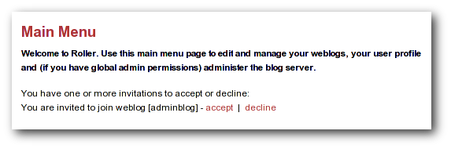
Illustration
20: Main Menu with invitation to join a group blog
Click 'accept' to become a member of the group blog or 'decline' to turn down the invitation.
Contribute to a group blog
Once you're a member of a group blog, contributing is as easy as creating blog entry content. To access the group blog, login, from the Main Menu navigate to the group blog you'd like to contribute to and select any of the following: New Entry, Edit Entries, Settings (weblog admins only).
For users who participate in multiple weblogs it is important to note that the Main Menu page is how you switch between the various weblogs you can author to. The Main Menu will always show you what weblogs you are participating in and what privilages you have on each weblog.
Resign from a Group Blog
To resign from a group blog, login, on the Main Menu page, navigate to the blog information for which you wish to resign. Select 'Resign'.
Weblog update pings provide a means for you to notify aggregation and indexing sites, (for example Weblogs.com, Technorati and javablogs.com) that your weblog has changed so that they will pick up your latest content from your RSS feed.
Roller supports conventional XML-RPC weblog update ping mechanism used by many sites for such notifications.
Generally speaking, aggregation sites first require you to register your weblog with their site. During this registration process you normally provide both the HTTP URL and the RSS feed URL for your weblog. This is important because the ping message conveys only the normal HTTP URL of your site, and the site will use that to lookup the registered RSS feed URL to fetch from.
Aggegation sites that accept ping notifications generally publish the ping URL to use to ping their site on their (human-readable) web site. Once you have registered your site with an aggregator, you can set up your weblog to deliver pings to that site.
You can set up the Roller server to ping sites of your choice automatically whenever you post published updates to your weblog.
Roller uses the term ping target to refer to a site, such as an aggregator, that accepts weblog update ping notifications. A ping target is configured with a (display) name and the ping URL needed to reach the site. Before you can send a ping to a site, you must configure a ping target in Roller for the site. Roller supports the configuration of two types of ping targets:
Once a ping target (either a common ping target or a custom ping target) has been configured for the site that you wish to ping, you can use the Weblog:Pings page (shown below) to enable automatic pings and send manual pings.
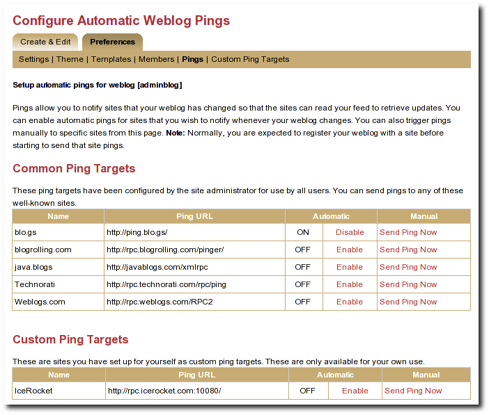
Illustration
21: Automatic ping configuration page
To enable automatic pings to a ping target, find the ping target on the page and click the Enable link in the Automatic column. The status indicator turns to ON and the link changes to Disable (as shown for some sites in the screenshot above). To disable automatic pings to a ping target click the Disable link in the Automatic column. The status indicator turns to OFF and the link changes to Enable.
Custom ping targets that you have configured are displayed on this page in a separate table below the common ping targets; they work in the same way. You may need to scroll down the page to see them
When you have enabled automatic pinging for a ping target, Roller will automatically send a ping to that site whenever you publish a new weblog entry or update a published weblog entry.
Note: In actuality, Roller queues a request to send the ping and processes this request in the background, so that you can get on with your blogging. The ping queue is processed at an interval configured by the site administrator; this interval is 5 minutes in a default configuration. In case the aggregator site is temporarily unreachable, Roller will requeue your ping request and retry on subsequent passes through the queue; in a default configuration the ping is requeued for up to 3 ping attempts.
You can also send a manual ping to a ping target using the Send Ping Now link listed for the target on the Weblog:Pings page. When you send a manual ping the ping is not queued, it is sent immediately and attempted only once. Roller shows you the response status (success or a failure message) that results from the ping. Using manual pings, you can test your custom ping targets to make sure that the URL you have entered is working properly.
You do not need to enable automatic pinging in order to send manual pings. You can send a manual ping whether or not you have enabled automatic pinging for that target.
You can use manual pings if you ping a site very rarely, or if you are feeling a bit impatient, and you don't want to wait for the next queue processing interval.
You should find that most popular ping targets are listed among the common ping targets and you can ping these without needing to create a new custom one. If you don't find a common target listed for the site you wish to ping, you have two options. You can request that your administrator add a new common ping target (directions in [21]); most likely, your friendly Roller administrator will be happy to add new common ping targets for aggregator sites that many other users will also be interested in using. Alternatively, you can add your own custom ping target using the Weblog:Custom Ping Targets page.
Note: Custom ping targets are a feature that the administrator can disable. If you do not see Weblog:Custom Ping Targets menu item, or any heading for Custom Ping Targets on the Weblog:Pings page, then an administrator has disabled it, and you will need to contact an administrator to get a new common ping target added.
Before adding a custom ping target, you must determine the proper ping URL for the site that you wish to ping. You must get this information from the aggregator's web site or from another knowledgeable source.
It can be hard to find the aggregator's documentation telling you the specific ping URL to use to notify their site. Commonly aggregators list this on their web site under a topic providing help about registering your feed, or under a topic providing information for developers. Keep in mind that some aggregators only use periodic polling and do not accept ping notifications at all. If you can't find any information about pinging on the aggregator's web site, the site may not support pinging.
Once you have found the proper ping URL, you can add your custom target using the Weblog:Custom Ping Targets page, which looks something like the following screen-shot.
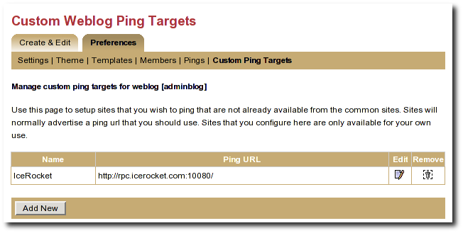
Illustration
22: Custom ping targets page
Click the Add New button to add a new custom ping target. This will bring up a form with a Name field and a Ping URL field. Fill in both fields, and click the Save button.
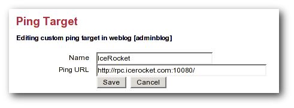
Illustration
23: Edit ping target form
Once you have created a custom ping target, you will see it listed on the Weblog:Custom Ping Targets page. From this page, you can further edit it or delete it. To enable automatic pings or send manual using your custom ping targets, use the Weblog:Pings page.
The ping target's name must be unique among your own custom targets, and the Ping URL must be a properly formed URL with a known hostname (or a raw IP address). If any of these conditions are not met, the Save will fail, and you will get an error indication telling you what was wrong with your entry
When you register with an aggregator, you will usually need to provide two pieces of information as part of the registration, your blog's base (HTML) url and your RSS feed (XML) URL. Make sure to read the aggregator's documentation and help on registering.
For Roller weblogs, you get your weblog's base URL by viewing your weblog and taking the URL to the point just following your weblog's handle. (In other words it should end with page/handlenamehere).
The RSS feed URL for your whole feed can be obtained by substituting page in your weblog's URL with RSS. Most browsers will display this link in the status bar when you place your mouse over RSS badge (the little orange XML box) on your weblog page.
You also have category-specific feeds, which are useful for registering with topical aggregators like java.blogs. To get a category-specific feed URL, just append ?catname=/category/path where /category/path is the full path of the category. The "basic" theme has some category RSS feeds just below the RSS badge in the right-hand vertical bar.
Some aggregators can also scrape (read and parse the HTML of your weblog) to discover the feed URL automatically when provided with the HTML URL. The default Roller theme template pages include hints in the form of tags that many sites can use to determine the feed URL automatically.
The section of the Roller user guide is for users with the global admin role. How do you get the admin role? The first user created in a Roller system gets that role and then can grant it to other users via the Global Admin->User Admin page, which just happens to be the first topic we'll cover in the section.
We'll also describe how to configure Roller via the Global Admin->Configuration page and how to configure Roller's custom ping facility via the Global Admin->Ping Targets page.
The Global Admin->User Admin page, shown below, allows you to find users, edit users and create new users.
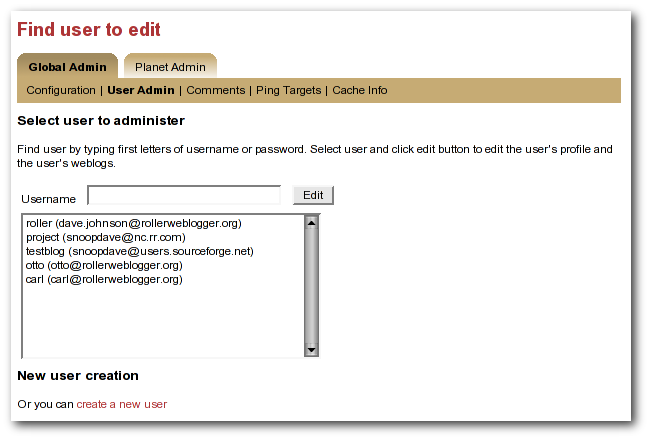
Illustration
24: User admin page
To find a user, just enter the user's username in the username in the the Username field and click the edit button. If you don't know the user's username, then start typing what you think might be the first letters of her username or email address and the list-box will be populated with all users whose usernames or email addresses match. When you see the user you want in the list box, click her and then click the Edit button to edit her user information.
You can also create a new user by clicking the create a new user link.
When a user is loaded into the Global Admin->User Admin page, or when you create a new user, you'll see the form shown below. You can set the user's full name, email address, locale and timezone. You can also reset the user's password, if you enter both a password and password confirmation fields.

Illustration
25: User admin form
You can also disable a user, which will prevent the user from logging into Roller.
Or you can check the Administrator checkbox to grant grant the user Global Admin privileges.
At the bottom of the page, there's a Users Weblogs section, which you can use to edit any of the user's weblogs. This feature is here to make it easy for Global Admin's to help users who are having trouble with any of Roller's features, so please use it for that reason only; don't use it to invade your user's privacy.
NOTE: you can disable a user but there is no way to remove a user from Roller.
The Global Admin->Configuration page allows you to set Roller's runtime configuration properties. It is a big page, so we will discuss each section separately below.
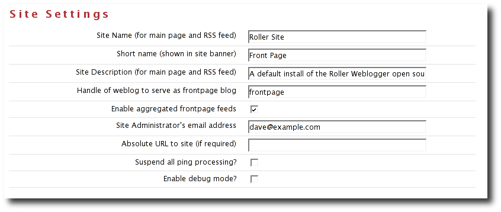
Illustration
26: Config page: site settings
Site name: name of the site, to be included in site-wide newsfeeds (RSS and Atom) and on the default front page of the Roller.
Short name: short name of the site, to be included as the link in the banner that appears at the top of every page in the Roller editor/admin UI.
Site description: description of site, to be included in site-wide newsfeeds (RSS and Atom) and on the default front page of the site.
Site Administrator's email Address: admin's email address, to be include in side-side newsfeeds (RSS and Atom)
Handle of weblog to serve as frontpage blog: specify the weblog that is to be displayed as the frontpage fo this Roller site.
Enable aggregated frontpage feeds: Set this to true if you would like the frontpage weblog's RSS and Atom feeds to be an aggregation of all weblogs on the Roller site.
Absolute URL to this site: to be used as basis for creating absolute URLs. Required for Roller's Planet aggregator feature.
Suspend all ping processing: Allows you to turn off all (outgoing) weblogs pings for all weblogs in the system.
Enable debug mode: currently not used.
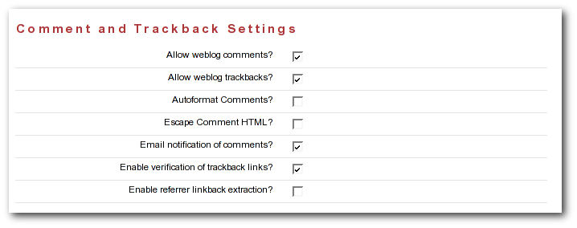
Illustration
27: Config: comments
Allow New Users: Set this to enable the register as new user link on the main page. If you turnoff user creation, you'll only be able to create new users via the Global Admin->User Admin page.
External registration URL: Controls the URL of Roller's “Register as new users” link. If you use an external system to create Roller users and blogs, set the URL of that system here.
Editor pages: this is the list of weblog editors to be provided to users.
Allow weblog comments: By un-setting this you can turn off weblog comments on all weblogs in the system.
Allow trackbacks: By un-setting this you can turn off incoming trackbacks on all weblogs in the system.
Autoformat comments: If this is on, Roller will auto-format comments by adding in line-breaks where appropriate.
Escape comment HTML: By setting this, you can disallow HTML in comments and thereby protect your site from malicious JavaScript and some forms of cross-site scripting.
E-mail notification of comments: set this to enable email notification of new comments. This won't work unless you configured Roller properly for sending email as described in the Roller installation guide.
Enable verification of trackback links: Trackback verification checks each incoming trackback to verify that the site sending the trackback actually links to the specific weblog entry that is the target of the trackback.
Enable referrer linkback extraction: NOT RECOMMENDED. This is an experimental feature and it is not known to be working correctly.
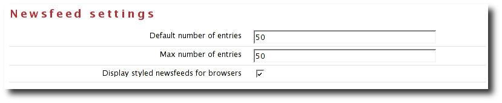
Illustration
28: Newsfeed settings
Default number of entries: default number of entries to appear in each newsfeed (RSS and Atom).
Maximum number of entries: maximum number of entries to be allowed in each newsfeed (RSS and Atom).
Display styled newsfeeds for browsers: Set to true to enable user-friendly RSS and Atom feed display, so that users don't see raw XML when they load the feed in their browsers.

Illustration
29: Config page: file upload settings
Enable File Uploads: Are users allowed to upload files?
Allowed Extensions: Comma-separated list of file extensions that users are allowed to upload.
Forbidden Extensions: Comma-separated list of file extensions that users are NOT allowed to upload.
Max File Size (MB): Maximum size of file that users are allowed to upload.
Max Directory Size (MB): Total upload directory size per user.
This section, intended for Roller administrators, describes how Roller weblog update ping feature works and how to configure and administer it.
Common ping targets are ping targets that are shared by all users. You can create and edit common ping targets using the Global Admin->Ping Targets page.
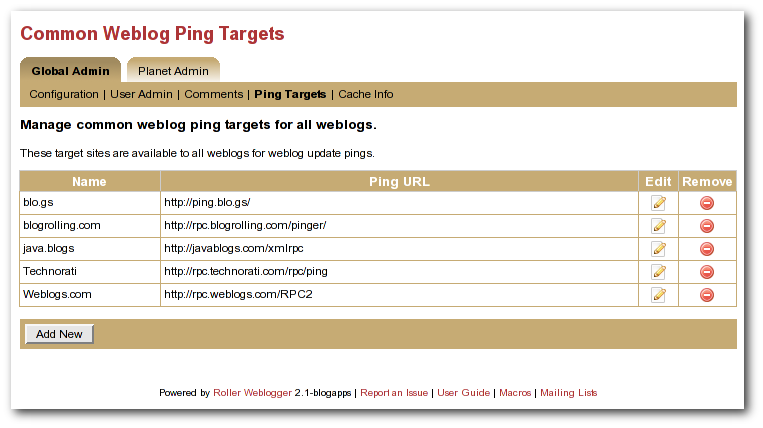
Illustration
30: Common weblog ping targets
You can create and edit common ping in the same way that regular users create and edit custom ping targets, but keep in mind that common ping targets are shared amongst all users, and that your changes affect all users using the ping target.
Administrators should make sure to test new common ping targets after creating them.
Roller processes weblog update pings in the background. When a user updates his or her weblog, Roller automatically queues any required automated pings on a queue. Roller only keeps one ping queue entry for a given user weblog and ping target. Subsequent updates to a weblog occurring before the ping is processed will not cause additional pings to be queued.
Roller makes a full pass through the ping queue at regular intervals. (Configuration of this interval is discussed below) In each pass, Roller will attempt to send every queued ping request once. If any send fails (and provided the failure appears to be a transient one), the ping request will be re-queued, until the ping succeeds or a configured number of attempts has been made. Note that when a ping request fails and is re-queued, it is processed again only on subsequent ping passes. If the number of attempts to reach a given ping target reaches the maximum without succeeding, then an error message is logged and the ping request is dropped.
There is currently no mechanism for alerting users of failing ping targets (though we plan some improvements in subsequent releases to provide condition information on the weblog Preferences->Pings page, as well as a failure policy to deactivate persistently failing ping targets).
These properties control processing of the ping queue. They are configured in the roller.properties file.
Administrators can suspend all ping processing at runtime by checking the Suspend ping processing? checkbox under the Site Settings heading on the Global Admin->Configuration page and saving that form.
When this checkbox is set, all ping processing is suspended. New automatic ping requests are not added to the queue, and existing entries on the queue are not processed. Manual pings are not sent either; they result in a message telling the user that ping processing has been suspended. Suspending ping processing is appropriate to temporarily stop all ping processing if problems are encountered.
Unchecking the checkbox and saving allows normal ping processing to resume. Note, however, that autopings for weblogs that are updated while ping processing is suspended will never be queued and hence never sent, but pings queued before the suspension are sent once the suspension is lifted.
Since use of a ping target causes an outbound network connection to the ping site, some administrators may not want to allow users to create their own custom ping targets. It is possible to enable or disable the use of custom ping targets across the whole site and also to disable all ping usage. The following two properties are used to control this.
Administrators may also wish to disable ping functionality entirely. The following property, used in conjunction with the above property, can be used to do this.
If both of the above properties are set to true, all ping functionality is effectively disabled for regular users. The Global Admin:Ping Targets page is still accessible (to administrators); you can use that page to clear out any common targets if you wish. No user (including administrators) will be able to configure automatic pings or send pings. Ping queue processing continues but the queue will always be empty; you can safely disable ping queue processing (by setting the processing interval to zero) in this situation.
The initial set of common ping targets is determined by the following configuration property.
{{name}{url}}
Roller includes an aggregator known as Planet Roller, which makes it possible for your to aggregate together weblogs from a Roller server with weblogs that are hosted elsewhere. You can create multiple aggregation groups each with its own set of feeds, you can display aggregation groups on your weblog pages and Roller provides an RSS feed for each group you create.
Roller's aggregator is not enabled by default. If you want to use it, you'll have to ask your site administrator to enable and configure it for you. Please refer to the Roller Installation Guide for more information on that topic.
If you've got Planet enabled, when you login as a global admin you'll see a Planet Administration link on the Roller Main Menu page. Click that link to view the Planet Admin->Configuration page, shown below.

Illustration
31: Planet config page
To configure Planet Roller, you must:
Ensure that your site has an absolute URL in the Global Admin->Configuration page in the Site Settings section.
If you are behind a proxy, you must enter proxy settings in the Planet Admin->Configuration page.
Planet Roller allows you to create multiple aggregation groups each containing a different set of feeds, but there is also a special group known the external group that is managed by Roller. The external group includes all weblogs on your Roller server plus any externally hosted weblogs you choose to add. The RSS feed for the external group is avalable at /planetrss, so on a default Roller install its URL will be:
http:// localhost:8080/roller/planetrss
This section describes how to add and remove weblogs using the Planet Admin->Subscriptions page, shown below.

Illustration
32: Planet subscriptions page
Adding an external weblog to Planet Roller
To add an externally hosted weblog to the Planet, use the Planet Admin->Subscriptions page. Enter it's title, newsfeed URL and website URL and click the Save button.
Normally, you must enter all three field, but if you have a Technorati license in your classpath you might be able to enter only the website URL and let Roller figure out the rest (by using Technorati).
NOTE: Planet Roller only supports Atom and RSS newsfeeds that include entry level date information. If you enter a subscription that does not include dates, Planet Roller will accept it, but you may not see entries from the feed because Roller will assume that it's entries are at least one day old.
Removing an external weblog from Planet Roller
You can select an existing subscription and edit it or delete it. The change will not be evident on the front page until the next scheduled Refresh Entries task runs.
You can also add custom aggregation groups and Planet Roller will provide an RSS newsfeed for each group you add. For example, if you add groups with the handles music and politics, then you'll get two feeds at URLs like this:
http://localhost:8080/roller/planetrss?group=music
http://localhost:8080/roller/planetrss?group=politics
To add new custom groups just use the Planet Admin->Custom Groups page, shown below.

Illustration
33: Planet custom groups page
To create a custom group
Go to the Planet Admin->Custom Groups page and enter the title and enter a title for the group, one that is appropriate for display in the group's RSS feed. Enter a handle a one word name for the group, which you'll use to refer to the group in your page templates. When you're done click the Save button
You'll see your new group appear in the Existing Custom Aggregation Groups table. Click on the Subscriptions icons for your new group and you'll be taken to the Planet Admin->Subscriptions page so you can add feed subscriptions to the group.
Enter the title, newsfeed URL and website URL for the feed you'd like to add and click the Save button to add it to the feeds list. Repeat once for each subscription you'd like to add to the group.
Apache License
Version 2.0, January 2004
http://www.apache.org/licenses/
TERMS AND CONDITIONS FOR USE, REPRODUCTION, AND DISTRIBUTION
1. Definitions.
"License" shall mean the terms and conditions for use, reproduction,
and distribution as defined by Sections 1 through 9 of this document.
"Licensor" shall mean the copyright owner or entity authorized by
the copyright owner that is granting the License.
"Legal Entity" shall mean the union of the acting entity and all
other entities that control, are controlled by, or are under common
control with that entity. For the purposes of this definition,
"control" means (i) the power, direct or indirect, to cause the
direction or management of such entity, whether by contract or
otherwise, or (ii) ownership of fifty percent (50%) or more of the
outstanding shares, or (iii) beneficial ownership of such entity.
"You" (or "Your") shall mean an individual or Legal Entity
exercising permissions granted by this License.
"Source" form shall mean the preferred form for making modifications,
including but not limited to software source code, documentation
source, and configuration files.
"Object" form shall mean any form resulting from mechanical
transformation or translation of a Source form, including but
not limited to compiled object code, generated documentation,
and conversions to other media types.
"Work" shall mean the work of authorship, whether in Source or
Object form, made available under the License, as indicated by a
copyright notice that is included in or attached to the work
(an example is provided in the Appendix below).
"Derivative Works" shall mean any work, whether in Source or Object
form, that is based on (or derived from) the Work and for which the
editorial revisions, annotations, elaborations, or other modifications
represent, as a whole, an original work of authorship. For the purposes
of this License, Derivative Works shall not include works that remain
separable from, or merely link (or bind by name) to the interfaces of,
the Work and Derivative Works thereof.
"Contribution" shall mean any work of authorship, including
the original version of the Work and any modifications or additions
to that Work or Derivative Works thereof, that is intentionally
submitted to Licensor for inclusion in the Work by the copyright owner
or by an individual or Legal Entity authorized to submit on behalf of
the copyright owner. For the purposes of this definition, "submitted"
means any form of electronic, verbal, or written communication sent
to the Licensor or its representatives, including but not limited to
communication on electronic mailing lists, source code control systems,
and issue tracking systems that are managed by, or on behalf of, the
Licensor for the purpose of discussing and improving the Work, but
excluding communication that is conspicuously marked or otherwise
designated in writing by the copyright owner as "Not a Contribution."
"Contributor" shall mean Licensor and any individual or Legal Entity
on behalf of whom a Contribution has been received by Licensor and
subsequently incorporated within the Work.
2. Grant of Copyright License. Subject to the terms and conditions of
this License, each Contributor hereby grants to You a perpetual,
worldwide, non-exclusive, no-charge, royalty-free, irrevocable
copyright license to reproduce, prepare Derivative Works of,
publicly display, publicly perform, sublicense, and distribute the
Work and such Derivative Works in Source or Object form.
3. Grant of Patent License. Subject to the terms and conditions of
this License, each Contributor hereby grants to You a perpetual,
worldwide, non-exclusive, no-charge, royalty-free, irrevocable
(except as stated in this section) patent license to make, have made,
use, offer to sell, sell, import, and otherwise transfer the Work,
where such license applies only to those patent claims licensable
by such Contributor that are necessarily infringed by their
Contribution(s) alone or by combination of their Contribution(s)
with the Work to which such Contribution(s) was submitted. If You
institute patent litigation against any entity (including a
cross-claim or counterclaim in a lawsuit) alleging that the Work
or a Contribution incorporated within the Work constitutes direct
or contributory patent infringement, then any patent licenses
granted to You under this License for that Work shall terminate
as of the date such litigation is filed.
4. Redistribution. You may reproduce and distribute copies of the
Work or Derivative Works thereof in any medium, with or without
modifications, and in Source or Object form, provided that You
meet the following conditions:
(a) You must give any other recipients of the Work or
Derivative Works a copy of this License; and
(b) You must cause any modified files to carry prominent notices
stating that You changed the files; and
(c) You must retain, in the Source form of any Derivative Works
that You distribute, all copyright, patent, trademark, and
attribution notices from the Source form of the Work,
excluding those notices that do not pertain to any part of
the Derivative Works; and
(d) If the Work includes a "NOTICE" text file as part of its
distribution, then any Derivative Works that You distribute must
include a readable copy of the attribution notices contained
within such NOTICE file, excluding those notices that do not
pertain to any part of the Derivative Works, in at least one
of the following places: within a NOTICE text file distributed
as part of the Derivative Works; within the Source form or
documentation, if provided along with the Derivative Works; or,
within a display generated by the Derivative Works, if and
wherever such third-party notices normally appear. The contents
of the NOTICE file are for informational purposes only and
do not modify the License. You may add Your own attribution
notices within Derivative Works that You distribute, alongside
or as an addendum to the NOTICE text from the Work, provided
that such additional attribution notices cannot be construed
as modifying the License.
You may add Your own copyright statement to Your modifications and
may provide additional or different license terms and conditions
for use, reproduction, or distribution of Your modifications, or
for any such Derivative Works as a whole, provided Your use,
reproduction, and distribution of the Work otherwise complies with
the conditions stated in this License.
5. Submission of Contributions. Unless You explicitly state otherwise,
any Contribution intentionally submitted for inclusion in the Work
by You to the Licensor shall be under the terms and conditions of
this License, without any additional terms or conditions.
Notwithstanding the above, nothing herein shall supersede or modify
the terms of any separate license agreement you may have executed
with Licensor regarding such Contributions.
6. Trademarks. This License does not grant permission to use the trade
names, trademarks, service marks, or product names of the Licensor,
except as required for reasonable and customary use in describing the
origin of the Work and reproducing the content of the NOTICE file.
7. Disclaimer of Warranty. Unless required by applicable law or
agreed to in writing, Licensor provides the Work (and each
Contributor provides its Contributions) on an "AS IS" BASIS,
WITHOUT WARRANTIES OR CONDITIONS OF ANY KIND, either express or
implied, including, without limitation, any warranties or conditions
of TITLE, NON-INFRINGEMENT, MERCHANTABILITY, or FITNESS FOR A
PARTICULAR PURPOSE. You are solely responsible for determining the
appropriateness of using or redistributing the Work and assume any
risks associated with Your exercise of permissions under this License.
8. Limitation of Liability. In no event and under no legal theory,
whether in tort (including negligence), contract, or otherwise,
unless required by applicable law (such as deliberate and grossly
negligent acts) or agreed to in writing, shall any Contributor be
liable to You for damages, including any direct, indirect, special,
incidental, or consequential damages of any character arising as a
result of this License or out of the use or inability to use the
Work (including but not limited to damages for loss of goodwill,
work stoppage, computer failure or malfunction, or any and all
other commercial damages or losses), even if such Contributor
has been advised of the possibility of such damages.
9. Accepting Warranty or Additional Liability. While redistributing
the Work or Derivative Works thereof, You may choose to offer,
and charge a fee for, acceptance of support, warranty, indemnity,
or other liability obligations and/or rights consistent with this
License. However, in accepting such obligations, You may act only
on Your own behalf and on Your sole responsibility, not on behalf
of any other Contributor, and only if You agree to indemnify,
defend, and hold each Contributor harmless for any liability
incurred by, or claims asserted against, such Contributor by reason
of your accepting any such warranty or additional liability.
END OF TERMS AND CONDITIONS
APPENDIX: How to apply the Apache License to your work.
To apply the Apache License to your work, attach the following
boilerplate notice, with the fields enclosed by brackets "[]"
replaced with your own identifying information. (Don't include
the brackets!) The text should be enclosed in the appropriate
comment syntax for the file format. We also recommend that a
file or class name and description of purpose be included on the
same "printed page" as the copyright notice for easier
identification within third-party archives.
Copyright [yyyy] [name of copyright owner]
Licensed under the Apache License, Version 2.0 (the "License");
you may not use this file except in compliance with the License.
You may obtain a copy of the License at
http://www.apache.org/licenses/LICENSE-2.0
Unless required by applicable law or agreed to in writing, software
distributed under the License is distributed on an "AS IS" BASIS,
WITHOUT WARRANTIES OR CONDITIONS OF ANY KIND, either express or implied.
See the License for the specific language governing permissions and
limitations under the License.